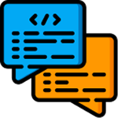
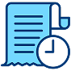

Chat por proyecto
Cada proyecto puede tener una conversación grupal para mantener decisiones y contexto junto al trabajo.
Comunica decisiones, dudas y acuerdos sin salir del proyecto, el tablero o la tarea que estás revisando.

Cada proyecto puede tener una conversación grupal para mantener decisiones y contexto junto al trabajo.
Abre conversaciones directas con otros usuarios para resolver dudas rápidas o coordinar entregas.

Conserva mensajes recientes, acuerdos y seguimiento para que el equipo no pierda información importante.
Selecciona una conversación de proyecto o inicia un chat privado.
Pregunta, confirma cambios o deja acuerdos sobre tareas activas.
Revisa el historial para entender bloqueos y decisiones previas.
Mantén la comunicación conectada con proyectos, usuarios y reportes.
Menos mensajes perdidos, más acuerdos visibles para todo el equipo.